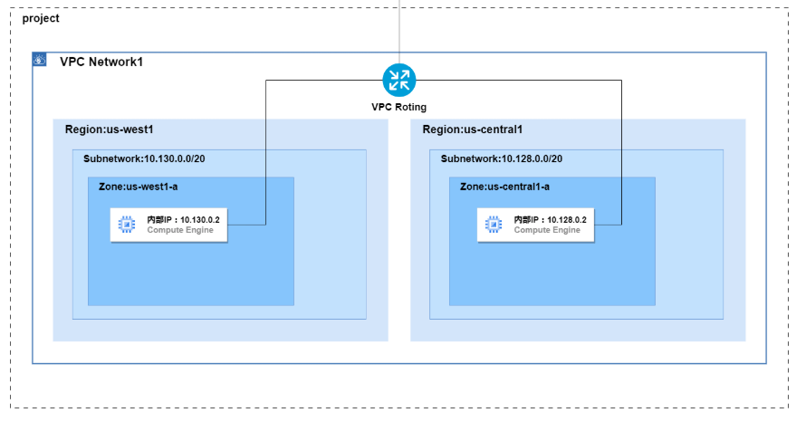
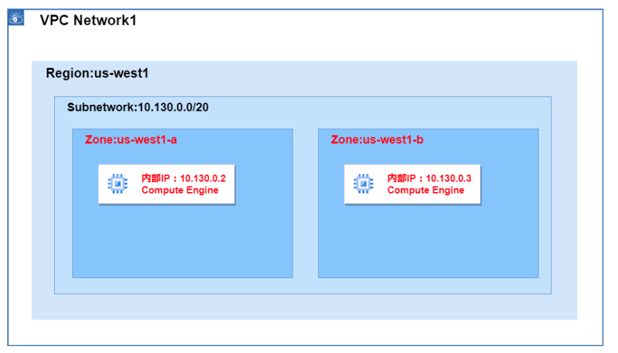

5. Network¶
5.1. VPC¶
VCPとは、Google Cloud内に提供される仮想ネットワーク提供サービス。
5.1.1. VCPネットワーク¶
Google Cloud内に構成される仮想ネットワークをVPCネットワークと呼ぶ。 VPCネットワークはグローバルリソースであり複数のリージョンを収容可能。
 【よくわかる Google Cloud】VPCネットワークとは
また、リージョン内のサブネットに作成されたVNなどには内部IPが割り当てられ、VPC内の通信に関しては異なるサブネットに所属していても内部IPを利用して通信が行われるため、特別なルーティング設定なしに可能である。 すなわち、GCPにおいては、VPCを構築するだけでマルチリージョン構成を構築できる。
5.1.2. サブネット¶
サブネットとは、ネットワークのIPアドレスを論理的に分解した小さなネットワークである。 サブネットは、CIDR表記を利用されて表現される。 VPC内部においてサブネットを定義する際にはVPC内でCIDRが重複しないよう設定を行う必要がある。
サブネットはリージョンリソースであり、複数のZoneに跨いで定義することができる。  【よくわかる Google Cloud】VPCネットワークとは
5.1.3. ルーティング¶
ルーティング（経路制御）では、VPC内のトラフィックをどこに転送するかのルールを定義する。
VPCネットワークごとにルートテーブルが存在し、宛先CIDRごとに送り先を定義する。
VPCネットワークを作成したタイミングでデフォルトとしてデフォルトルートとサブネットルートという2種類の自動毛色が自動で登録される。
種類 |
内容 |
|---|---|
サブネット間ルート |
VPC作成時に、自動生成。すべてのサブネット間通信を許可するルート（削除不可） |
デフォルトルート |
VPC作成時に、自動生成。。IGW（default-internet-gateway）に向く |
カスタムルート |
特定のCIDRをVPN、Peering、VMインスタンスなどに向けるための追加ルート |
例としては以下のような設定を行う。
宛先 |
次ホップ |
備考 |
|---|---|---|
10.128.0.0/9 |
local |
自動生成（同じVPC内の他サブネット） |
0.0.0.0/0 |
default-internet-gateway |
インターネット向け（デフォルト） |
10.0.0.0/16 |
vpn-tunnel-1 |
オンプレミスVPN |
192.168.0.0/24 |
instance-1 |
ルータ代わりのVMなど |
5.1.4. IGW¶
デフォルトインターネットゲートウェイは、GCP環境内に自動で作成される、インターネット接続ポイントであり、VPCネットワーク作成時に自動で有効化されており、削除もできない。
ルートの設定は、VPC全体に適用されるため、サブネット単位でインターネット接続の可能不可能を制御しない。つまり、GCPにおいては、Public SubnetやPrivate Subnetといった考えは存在しない。GCPにおいて、外部への接続の制御は、Firewallで行う。
また、外部IPを持っている場合は外部IPを利用してIGWを経由してアクセスを行うが、外部IPを持たせたくない場合はNATを経由してアクセスする。
5.1.5. Cloud NAT¶
Google Cloud でインスタンス（例：Compute Engine）からインターネットに接続するには、通常は外部IPアドレスを付与する必要がある。ただし、外部からの通信は受け付けたくない、つまりインバウンド通信を遮断したい場合には、外部IPを付与せずにアウトバウンド通信だけを有効にしたくなる。このようなケースで利用するのが Cloud NAT（Network Address Translation） である。
Cloud NAT を構成するためには、Cloud Router がセットで必要となる。Cloud Router は、Cloud NAT のルーティングを制御する役割を担う動的ルーティング機能であり、NATゲートウェイのバックエンド的存在。
Cloud NAT は、対象となるサブネットまたはサブネット内のIPレンジ（例：特定のVMのプライベートIP範囲）を指定することで、そのサブネットからのアウトバウンド通信を自動で変換してくれる。つまり、VM やアプリケーション側では NAT の存在を意識する必要はない。
5.1.6. Firewall¶
Firewallとは、ターゲットへの通信において、ポリシーを定義することで許可または拒否するセキュリティ機能。
GCPにおいては、VPCに対してFirewallを定義することができ、インバウンドやアウトバンドの通信についてポリシーを適用することができる。具体的には、以下のようにルールを適用できる。
要素 |
説明 |
|---|---|
direction |
INGRESS（受信） or EGRESS（送信） |
action |
ALLOW または DENY |
sourceRanges / destinationRanges |
INGRESSでは送信元、EGRESSでは宛先をCIDRで指定 |
protocols / ports |
TCP/UDPなどとポート番号の組み合わせ |
targetTags / targetServiceAccounts |
このルールを"どのVMに"適用するか（タグ or SA） |
INGRESSとEGRESSでそれぞれの要素の具体的な意味合いが異なるのでそれぞれについてまとめると以下。
要素 |
INGRESS時の意味 |
EGRESS時の意味 |
|---|---|---|
action |
ALLOW or DENY（受信の許可/拒否） |
ALLOW or DENY（送信の許可/拒否） |
sourceRanges |
通信の送信元IP（例：0.0.0.0/0） |
使用しない（EGRESSでは指定不可） |
destinationRanges |
使用しない（INGRESSでは指定不可） |
通信の宛先IP（例：8.8.8.8/32） |
protocols / ports |
どのポートを許可するか（例：tcp:22） |
どのポートを許可するか（例：tcp:443） |
targetTags / targetServiceAccounts |
通信を受けるVMの指定 |
通信を出すVMの指定 |
priority |
優先度。数値が小さいほど優先 |
優先度。数値が小さいほど優先 |
5.1.7. ネットワークの拡張¶
VCPを拡張し、他のVPCやオンプレミスと通信する方法には以下のようなものがある。
拡張手段 |
接続対象 |
特徴 |
用途例 |
帯域/性能 |
備考 |
|---|---|---|---|---|---|
VPCピアリング |
GCP内の他のVPC（同一 or 他プロジェクト） |
GCP内の2つのVPCを内部IPベースで直接接続。 |
組織内の複数VPCを統合したい場合など |
高性能（GCP内バックボーン使用） |
双方向に明示的な設定が必要。トラフィックの転送/制御はやや限定的 |
共有VPC |
同一組織内の複数プロジェクト |
ホストプロジェクトでVPCを作成。 |
セキュリティとネットワーク管理の一元化 |
高性能 |
ホストプロジェクトとサービスプロジェクトの関係で構成 |
Cloud VPN |
オンプレミス or 他クラウド |
IPsecベースのVPN接続。すぐに使える柔軟な構成 |
小～中規模のハイブリッドクラウド構成 |
数百Mbps～最大10Gbps程度 |
HA VPNを使うと冗長化可能 |
Cloud Interconnect |
オンプレミス or データセンター |
高帯域・低レイテンシの専用回線。DedicatedとPartnerの2種がある |
大規模な企業の本番環境や高性能要件 |
10Gbps〜100Gbps |
接続にはCloud Routerが必要 |
Cloud Interconnectについては、さらに専用線のDedicatedとパートナー事業者を通じたParterがある。
種類 |
概要 |
接続場所 |
導入難易度 |
備考 |
|---|---|---|---|---|
Dedicated |
Googleと直接物理接続する専用線 |
GoogleのPOP（相互接続拠点） |
高 |
専用ポートと帯域（10Gbps単位）を選択可能 |
Partner |
Googleのパートナー（通信事業者など）を通じて接続 |
任意の場所（パートナーが提供） |
中 |
柔軟な帯域・地域対応。事前の契約が必要 |
5.1.8. デフォルトネットワーク¶
GCPでは、プロジェクトを作成した時点でdefaultという名前のVPCネットワークが作成されている。 各リージョンにサブネットまで準備されており、ルーティング設定やFirewallについても準備できている。 簡単な検証であればdefaultを利用して開始できる。
5.1.9. ネットワークの安全性¶
VCP Service Contorls(VCP SC)¶
Google Cloudのマネージドサービス（GCS/Firestore etc..）を論理的な境界で囲うことで外部へのデータ流出を防ぐ。 具体的には、「誰か」という認証に加えて、「どこから」アクセスまで確認する。
Private Service Connect(PSC)¶
Private Service Connect (PSC) は、Google Cloud のマネージドサービス（Cloud SQL など）を「サービス」として公開し、利用側 VPC からプライベート IP でアクセスできるようにする仕組みです。
ポイントは：
通信は常に Google の内部ネットワーク
VPC ピアリング不要
Producer（提供側）/ Consumer（利用側）が明確
例えば、Private Service Connectを利用して、異なるプロジェクトのCloud SQLとCloud Runを接続する場合を考える
Cloud SQL 側で PSC サービスを公開する（Producer）
Cloud SQL を Private Service Connect 経由で利用可能なサービスとして公開する
この時点では IP は作成されない
Cloud Run 側の VPC に PSC エンドポイントを作成する（Consumer）
VPC 内にプライベート IP が払い出される
この IP 宛ての通信が Cloud SQL にルーティングされる
Cloud Run 側で Serverless VPC Access コネクタを作成する
Cloud Run の通信を VPC に流し、PSC エンドポイントへ到達可能にする
Cloud SQL Language Connectors を利用して接続する
IAM 認証、TLS、接続管理をアプリ側で簡潔に扱える
別プロジェクトの場合は権限設定と API 有効化が必要
Cloud Run
↓
(Serverless VPC Access)
↓
PSC Endpoint（自分のVPC内IP）
↓
Google内部バックボーン
↓
Cloud SQL
5.2. Cloud Load Balancing¶
Cloud Load Balancing は、Google Cloud 上の Compute Engine や Cloud Storage などのバックエンドに対してトラフィックを自動で分散させるフルマネージドなサービスです。以下の特徴を持つ。
グローバル / リージョン / ゾーン間にまたがる負荷分散が可能
トラフィック量に応じて 自動スケーリング
ヘルスチェック機能によって正常なバックエンドへのみルーティング
HTTP(S)、TCP/SSL、UDP レベルでのロードバランシングをサポート
種類別の分類（用途・プロトコル・接続方式）
分類 |
説明 |
|---|---|
アプリケーションLB |
L7（HTTP(S)）レイヤで動作。Cloud CDNと連携可能。 |
プロキシ型ネットワークLB |
L4（TCP/SSL）レイヤのプロキシ型LB。IP非公開アクセスに対応。 |
パススルー型ネットワークLB |
L3/L4パススルーで構成、オンプレやVMのNICへ直接到達するケース向け。 |
デプロイモードの違い
項目 |
外部LB（External） |
内部LB（Internal） |
|---|---|---|
接続元 |
インターネットからのトラフィック |
VPC内部からの通信 |
主な用途 |
Webアプリ、API公開用など |
社内システム、サービス間通信など |
グローバル対応 |
アプリケーションLBはグローバルに対応 |
内部LBはリージョン単位（グローバル不可） |
5.3. Cloud CDN¶
Cloud CDN は、Google Cloud が提供する グローバルエッジキャッシュネットワーク。
Google の世界中のエッジロケーションで静的/動的コンテンツをキャッシュし、低レイテンシ・高速配信を実現
バックエンドとして Cloud Load Balancing（特にHTTP(S) LB）とセットで使用する
オリジンサーバは Compute Engine, Cloud Run, GKE, Cloud Storage などが利用可能
CDN の利用には外部HTTP(S)ロードバランサのバックエンド設定が必要
5.4. Cloud DNS¶
Cloud DNS は、Google Cloud が提供する高可用性・低レイテンシのスケーラブルなDNSサービス。
ドメイン名とIPアドレスの変換（名前解決）を行う
ゾーンの作成 → レコード（A, AAAA, CNAMEなど）の定義 により、独自ドメインの管理が可能